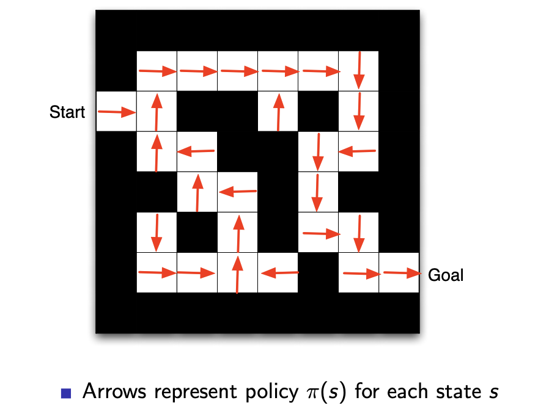
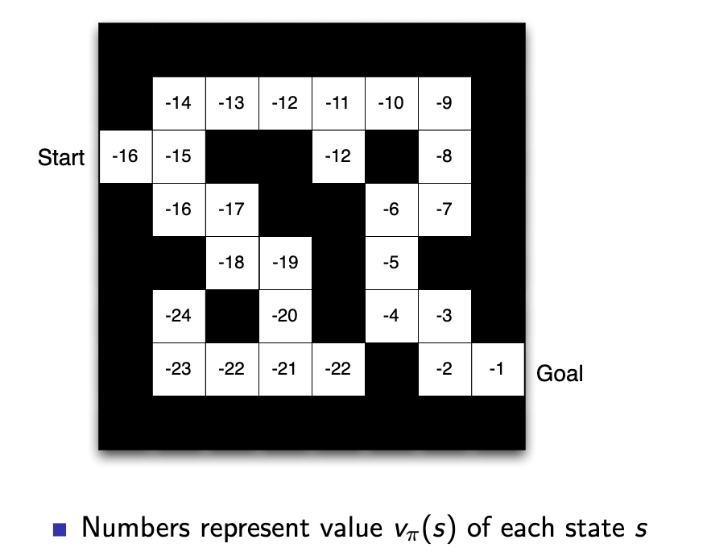
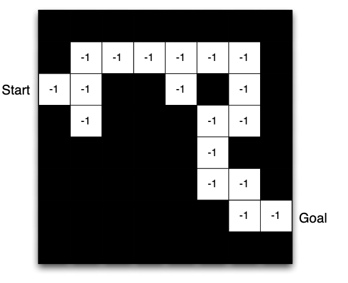

Trường ĐH Công nghệ – Đại học Quốc gia Hà Nội
Nhánh thứ ba của Machine Learning
Trò chơi & Game AI
Robot & Điều khiển
Ứng dụng thực tế
AI hiện đại
Agent · Environment · Reward · State · Policy
Reward Rₜ là tín hiệu vô hướng (scalar) — cho biết agent đang làm tốt đến đâu ở bước t.
Mục tiêu của agent: tối đa hóa tổng reward tích lũy theo thời gian.
| Bài toán | Reward dương | Reward âm |
|---|---|---|
| Trực thăng bay nhào lộn | Đi đúng quỹ đạo | Rơi / mất kiểm soát |
| Chơi cờ vây | Thắng ván cờ | Thua ván cờ |
| Robot đi bộ | Di chuyển về phía trước | Ngã |
| Quản lý điện | Sản xuất điện | Vượt ngưỡng an toàn |
History
Toàn bộ chuỗi quan sát, action, reward đến thời điểm t:
\[ H_t = O_1, R_1, A_1, \ldots, A_{t-1}, O_t, R_t \]State là thông tin dùng để quyết định bước tiếp theo:
\[ S_t = f(H_t) \]Markov Property
Con chuột thấy chuỗi: đèn, chuông, tay đòn, đèn, tay đòn, chuông, tay đòn...
Câu hỏi: Sẽ nhận được gì tiếp theo?
Nếu agent state = 3 items cuối:
đèn, tay đòn, chuông → ?
Chỉ nhìn được một đoạn ngắn — dễ bỏ sót pattern dài hơn
Nếu agent state = đếm số lần thấy mỗi loại:
{đèn: 2, chuông: 2, tay đòn: 3} → ?
Mất thứ tự thời gian — không biết thứ tự xuất hiện
Nếu agent state = toàn bộ history:
Chính xác nhất nhưng state space khổng lồ → khó học
Fully Observable (Markov Decision Process)
Partially Observable (Partially Observable MDP)
Policy · Value Function · Model
Policy là hành vi của agent — bản đồ từ state sang action
Deterministic — mỗi state cho đúng 1 action:
\[ a = \pi(s) \]Stochastic — mỗi state cho phân phối xác suất:
\[ \pi(a|s) = P[A_t = a \mid S_t = s] \]
Mũi tên ở mỗi ô = π(s) — policy tối ưu sau khi training xong. Agent nhìn vào ô hiện tại → làm theo mũi tên.
Value Function trả lời: "Ở state này, về lâu dài tôi nhận được bao nhiêu reward?"
\[ v_\pi(s) = \mathbb{E}_\pi\!\left[\sum_{k=0}^{\infty} \gamma^k R_{t+k+1} \;\middle|\; S_t = s\right] \]
Số ở mỗi ô = vπ(s) — value của state đó. Ô Goal = −1, ô kề = −2, ô cần 18 bước = −18. Agent dùng value để so sánh và chọn hướng có value cao hơn.
Model là bản đồ nội tâm — agent tự xây dựng để dự đoán môi trường hoạt động thế nào

Layout maze = Transition Model P(s'|s,a) — agent biết đi hướng nào thì đến ô nào. Số −1 ở mỗi ô = Reward Model R(s,a) — mỗi bước đi tốn 1 reward. Model có thể không hoàn hảo.
Theo thành phần:
Theo model:
| Agent | Policy | Value | Model |
|---|---|---|---|
| Value-Based (DQN) | Implicit | ✅ | ❌ |
| Policy-Based | ✅ | ❌ | ❌ |
| Actor-Critic | ✅ | ✅ | ❌ |
| Model-Based (AlphaGo) | ✅ | ✅ | ✅ |
Bài toán cốt lõi của RL
Exploration
Exploitation
| Tình huống | Exploit | Explore |
|---|---|---|
| Quảng cáo online | Hiện quảng cáo thành công nhất | Thử quảng cáo mới |
| Khoan dầu | Khoan ở vị trí tốt nhất đã biết | Thử vị trí mới |
| Chơi cờ | Đi nước mà bạn tin là tốt nhất | Thử nước đi thực nghiệm |
| Hệ thống gợi ý | Gợi ý nội dung user thích nhất | Gợi ý nội dung mới để học thêm |
5 neural networks học chơi Dota 2 hoàn toàn qua self-play — 180 năm game mỗi ngày, không có human data. Thanh % trên màn hình chính là Value Function realtime.
| Phương pháp | Ý tưởng chính | Ứng dụng nổi bật | Năm |
|---|---|---|---|
| Q-Learning | Học Q-table cho mọi (s,a) | Grid world, bài toán nhỏ | 1989 |
| DQN | Neural network xấp xỉ Q | Atari games | 2013 |
| Policy Gradient / PPO | Tối ưu policy trực tiếp | Robot, OpenAI Five | 2017 |
| AlphaZero | Self-play + MCTS | Cờ vây, cờ vua | 2017 |
| RLHF | Reward từ phản hồi người | ChatGPT, Claude, Gemini | 2022+ |
Câu hỏi mở: Reward Hypothesis nói rằng mọi mục tiêu đều có thể mô tả bằng reward. Bạn có đồng ý không? Hãy nghĩ về một ví dụ phản chứng.